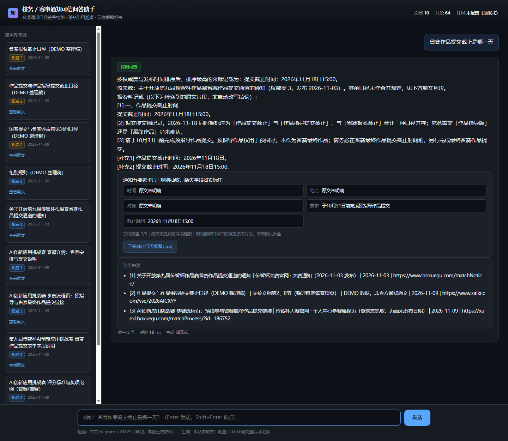

本项目不做一个「更流畅的通知问答机器人」，而做一个对多源通知口径作出可证伪裁决、且全过程可复现的系统。它面向的真实痛点是：同一赛事的通知分散在官网、高校转发、个人中心、提交表单和群内声明等多个渠道，写法不一致、会出补充通知、关键信息藏在会过期的附件里；学生据此判断「到底哪天截止」「该信哪个链接」时，一旦采信被排除的口径就可能失去参赛资格。
系统的技术选择因此与常见 RAG 相反：默认不生成答案，而是把通知拆成带原文逐字校验的原子断言，用规则层做检索、裁决、拒答与引用，把 LLM 严格限制在离线构建期与对照组。这样换来的是可核查性、可复现性与零依赖，而不是文采。
项目的痛点不是自述的。2026-11-09 共核实 12 项一手资料，下列为最关键的四类证据；完整索引与逐字摘录见 evidence/research/README.md，可信度分级与剔除清单见 OPTIMIZATION.md。
池州学院校长信箱 2026-10-10 收到学生来信：「大量由二级学院、实验室或社团牵头的赛事信息处于『隐形』状态，导致普通学生错失参赛机会，形成了『信息垄断』」，建议「建立年度竞赛总览方案并挂网公示，明确牵头部门/学院、具体联系人及时间节点」。教务处 2026-10-13 正式回复：「针对赛事信息分散问题，教务处将进一步统筹…集中公示赛事主办单位、联系人、时间安排等信息，拓宽赛事信息获取渠道」，并承诺「统一校内认定口径」。
来源：https://www.czu.edu.cn/xjxq.jsp?urltype=leadermail.LeaderMailContentUrl&wbtreeid=1069&leadermailid=cghp ｜时效 2026-10｜可信度 A+（校方官网正式往来）
中国大学生在线 2026-10-07《读懂学校通知是大学生的必修课》指出：通知分散于「班级群 / 学校·学院公众号 / 教务处网站 / 学生手册」；读通知要「圈出关键信息，时间、地点、对象、要求、截止时间」；「真正的干货是在附件里…以免文件过期，无法查看」；「凡是带截止时间的，马上写在手机日历或带有提前提醒的 APP 里」；「截止时间过了，你没注意，机会就错过了」。
本项目据此把「五要素」做成结构化卡片，并提供本地生成的 .ics 日历提醒；对附件与链接只做保守状态标记，不猜测有效期。
来源：https://xyh.univs.cn/a/xyh_xyh_zhrj/261007/2057146.shtml ｜时效 2026-10-07｜可信度 A-（官方平台原创经验文章，非调查数据，不作为统计比例）
多所高校的「补充/调整通知」使用显式效力措辞：
这说明普通 RAG 的「整份文档检索 + 并列展示」不足以表达真实效力关系：覆盖是条款级的，必须同时输出「哪些条款被覆盖」与「哪些明确沿用」。
SEARCH 17(2), 2025 期刊论文（辽宁高校学生微信日记研究）指出：「Information overload emerged as a core trigger of WeChat fatigue, particularly in high-density group communication environments such as university classes, internship groups, and administrative announcements」；@all 穿透免打扰造成失控感；受访者日记原句「Some of the important information is topped off!」；任务信息持续流入造成 hyper-responsiveness 与「fearing they might miss important instructions」的慢性焦虑。
适用边界：质性日记研究，样本为辽宁高校学生，不外推为全国比例；仅用于解释「为何要降低阅读负担、为何拒答要给出下一步指引」。
备赛过程中，2026-11-09 登录态抓取的官网原文即出现多重口径：省赛提交截止 11-18 15:00（大赛通知页与提交表单双重确认）；参赛流程页给出 kdocs 直链，而赛道详情页写「缴费后个人中心查看，不再单独提供外部链接」；国赛二等奖同页写 20% 与 25%、三等奖写 35% 与 30%；官网报名期写 7-29 起，高校转发通知写 9-1 起。用户本人就是受影响用户。
| 维度 | 普通 RAG | 本作品 |
|---|---|---|
| 输出形态 | 生成一段流畅答案 | 裁决书：结论句 + 原文片段 + 引用 + 口径差异 + 渠道对照 + 五要素卡片 |
| 检索单位 | 文本块 | 文本块 + 原子断言（141 条，逐字回查原文） |
| 冲突处理 | 并列列出 / 交给模型总结 | 显式规则裁决 + 条款级覆盖 + 不擅自合并 |
| 无依据时 | 可能编造 | 拒答 + 证据缺口说明（为什么查不到、去哪核对） |
| 过程证据 | 无 | 基准集 + 消融矩阵 + 细粒度 Git + 9 条 Prompt 链 |
| 运行时依赖 | 向量库 / LLM / key | 标准库零依赖；LLM 仅离线构建与对照组 |
effective_from / channel / supersedes / scope 的原子断言，只信任逐字回查过原文的条目。.ics）、可分享（#q=），而非聊天气泡。| 资产 | 规模 | 构建方式 | 校验 |
|---|---|---|---|
data/docs/official-01..06.md | 6 份官方原文 | 2026-11-09 登录态抓取（官网通知页 / 赛道详情 / 个人中心参赛流程 / WPS 表单） | 原文逐字存档于 evidence/official/，本人联系方式已脱敏 |
data/docs/demo-01..04.md | 4 份 DEMO | 交接文档整理稿，标注「非官方原文」 | authority=2，作为反例样本演示「二手稿不得凌驾官方」 |
data/claims.json | 141 条断言 | deepseek-flash 离线抽取，仅构建期调用 | evidence_span 必须是原文连续子串，141/141 通过；2 条未通过项保留在 v1 记录并公开更正 |
data/benchmark-v1.json | 24 题 / 7 类 | 人工标注：必含值、禁用值、gold 文档、冲突文档、拒答标记、原文回指 | 标准答案不由 LLM 生成；同一基准集复跑，不刷题 |
data/channels.json | 6 级渠道 / 10 份文档 / 4 个跨渠道案例 | 按官网与高校一手页面人工标注 | 每条可回溯到公开 URL |
data/coverage.json | 4 个条款级覆盖样本 | 只采用通知原文显式效力措辞 | 不推断、不把整份旧通知判为作废 |
data/campus/ | 3 份高校摘录 | 西交大 / 韩山师范 / 三校补充通知 | 电话、邮箱、群号脱敏；不进入检索语料，仅作证据 |
evidence/official/raw-process.txt 已脱敏；git log -S"sk-" 复核为空。SYSTEM_PROMPT 明确：只能依据提供片段作答、禁止编造日期/比例/金额/编号；每个结论标注来源编号；口径不一致须并列且禁止擅自选定；资料不足只输出「知识库中没有可靠依据」；转述用「据资料记载」，不把整理稿写成官方定论。
关键在于：这些约束不依赖模型自觉。默认运行时 ALLOW_ONLINE_LLM 硬门禁关闭，答案由规则层产生；LLM 只在离线构建期抽取断言、以及作为被测的「纯生成基线」出现。
| 规则 | 触发 | 行为 | 消融开关 |
|---|---|---|---|
| 权威度 / 时效加权 | 每次检索 | score × f(authority) × f(recency) | no_authority / no_recency |
| 同义扩展 | 「入口」vs「提交链接」 | 7 组领域同义词，权重 0.45 | no_expansion |
| 日期归一化 | 口径差异检测 | 2026-11-18 / 2026年11月18日 / 2026-11-18 15:00:00 归一键 | no_date_norm |
| 语义级拒答 | 主题未被覆盖 / 问金额但无金额证据 | 拒答 + 证据缺口说明 | no_semantic_abstain |
| 断言补充召回 | 数字、比例、页数类查询 | 从 141 条断言补原文片段，用 [补充N] 标记 | no_claims |
| 裁决结论句 | 正常作答 | 照录最高排序来源原句，声明不合并口径 | no_verdict |
| 附加证据区块 | 渠道/条款/后果/缺口触发词 | 渠道对照、条款级覆盖、证据缺口、决策后果与时效 | no_enrich |
初版只在「检索结果为空」时拒答，导致问「省赛答辩在哪天」时把「报名截止」片段硬答。修复采用两条通用规则（断言分 < 1.0 且 top1 < 12 且首位片段覆盖率 < 0.30；问金额但证据无金额单位）。随后最终验证又发现自引入回归「选错组别会怎样」被误拒，补入覆盖率保护。阈值来自 24 题分数分布，属可复现的经验阈值，并全部做成可关闭开关。
loader.py 读 frontmatter 文档；chunker.py 做段落切分，并把小节标题并入正文（避免 8 字空壳块在 BM25 里挤掉含答案解析）；claims.py 建断言索引。retriever.py 中文 bi-gram + BM25 + 权威度/时效先验 + 可关闭同义扩展。answer.py 去重、语义拒答、口径差异检测、裁决句、原文片段与补充片段编号分离；context.py 提供渠道对照、条款级覆盖、证据缺口、决策后果与时效状态。card.py 生成五要素卡片与 RFC 5545 .ics。server.py（标准库，零依赖）与 main.py（FastAPI，可选）提供同一组接口 /health /sources /ask /，行为一致。web/index.html 单文件、无 CDN、无框架、深色主题、响应式。补充断言片段若占用 [2][3] 编号而 citation 列表并无对应项，等于伪造溯源。系统因此把补充片段固定标为 [补充1]/[补充2]，正文 [1][2][3] 只对应 citations 中的条目，并有专门回归测试锁死。
官方要求 10 分钟极速复现。核心全部使用 Python 标准库，裸 Python 即可运行 python -m app.server --port 8000；FastAPI 版在联网装齐依赖后可用，二者接口语义一致。本会话中 pip 的 simple index 请求被代理拦截（403），改用 PyPI JSON API 直连下 wheel + --no-index --find-links 离线装齐并完成全端点实测；.wheels/ 已加入 .gitignore，不进仓库。
界面包含：知识库来源侧栏（标题 / 权威度 / 发布时间 / 原文链接）、问题输入与示例快捷按钮、裁决结论句、原文片段与补充片段、引用来源、口径差异黄色警示、通知五要素卡片（时间 / 地点 / 对象 / 要求 / 截止时间，缺失字段如实标「原文未明确」）、下载 .ics 日历提醒、拒答状态与耗时统计、可分享的 #q= 问题链接。

截图存档：evidence/screenshots/04-card-and-verdict.png。另有 01 空状态、02 口径差异、03 修复后答案三张。
系统只引用官方原文的渠道声明，不抓取群消息、不虚构联系人、不编造群内内容。
| 指标 | 来源 |
|---|---|
| 归因可核查率（FS=1.0 / PS=0.5 / NS=0 加权） | TREC 2024 RAG 支持度评测，arXiv:2504.15205（SIGIR 2025） |
| 引用完整性 | ALCE，arXiv:2305.14627（EMNLP 2023） |
| 冲突感知 / 逐文档标注 | ConflictScore，arXiv:2606.26437（2026-06）简化版 |
| hallucination / noise sensitivity 命名 | RAGChecker，arXiv:2408.08067（NeurIPS 2024 D&B） |
| 冲突类型只做 inter-context | Knowledge Conflicts for LLMs: A Survey，arXiv:2403.08319 |
LLM 不作裁判：TREC SIGIR 2025 报告人类与 GPT-4o 三级判断完全一致率仅 56%→72%，因此基准集人工标注、判卷只用确定性规则；纯生成 LLM 仅作被测对象。
| 指标 | 修复前 | 修复后 | 纯生成基线 |
|---|---|---|---|
| 结论正确率 | 45.8% | 66.7% | 66.7% |
| 应拒尽拒率 | 0.0% | 100.0% | 100.0% |
| 冲突感知率 | 12.5% | 37.5% | 37.5% |
| 错误口径采信率 | 16.7% | 12.5% | 8.3% |
| 归因可核查率 | 97.7% | 93.2% | 79.5% |
检索层：recall@3 = 6/8 (75%)、recall@5 = 8/8 (100%)；单测 35 个全过。
| 关闭项 | 结论正确率 | Δ | 解读 |
|---|---|---|---|
| full | 66.7% | — | 基线配置 |
| no_claims | 45.8% | -20.8pp | 断言补充召回贡献最大 |
| no_semantic_abstain | 54.2% | -12.5pp | 语义拒答有效 |
| no_date_norm | 66.7% | 0pp | 对正确率无影响，但全题冲突总数 27→30（归一化减少 3 条误报） |
| no_authority | 66.7% | 0pp | 对正确率无影响，冲突总数 27→32（抑制 5 条噪声） |
| no_expansion / no_abstain / no_verdict / no_enrich | 66.7% | 0pp | 如实记录「本基准集上无可观测影响」，不硬造差异 |
完整表格见 evidence/eval-report.md；实验产物 evidence/baseline/run-001.json、evidence/ablation/table.json。
首版判卷把 2 条落在 frontmatter 元数据里的断言误报为「模型编造」，实为提示词未禁抽元数据 + 校验器只比对正文。v1 记录原样保留（evidence/claims-build-v1.md），修正后重跑 141/141。系统不只校验 LLM 输出，也校验自己的判定器。
python -m unittest discover -s tests -q → 35 个测试通过。python -m app.cli --eval → recall@3 6/8、recall@5 8/8。python -m app.server --port 8000 → 浏览器打开 http://127.0.0.1:8000/。data/claims.json 与基准集均已固化入库。可选：.env.example 提供环境变量模板；ALLOW_ONLINE_LLM 默认关闭，即便传入 --llm 也不会发出云端请求（实测 LLM降级=True）。FastAPI 版需 requirements.txt，装好后 uvicorn app.main:app，接口与标准库版一致。
evidence/devlog.md 逐条回填 commit 与验证结果。tools/run_eval_v1.py 支持 EVAL_REUSE_BASELINE=1 固定基线产物；tools/score_eval.py 用确定性规则判卷，报告可复现。作品从零构建，核心检索、切分、裁决、拒答、评测、界面均为本项目编写；未直接使用任何已有开源项目包装参赛。唯一外部运行资产是已固化并逐字校验的断言数据与公开通知原文；第三方框架仅 FastAPI 作为可选薄封装。依赖清单、环境变量模板、10 分钟指南齐备。
| 官方维度 | 权重 | 本作品落点 |
|---|---|---|
| 过程可复现性与演进链路 | 25% | 细粒度 Git、9 条 Prompt 链、基准集 + 消融 + 评测报告、10 分钟复现 |
| 解题有效性与实用价值 | 25% | 12 项一手需求证据、真实 11-18 口径事件、裁决书 + 后果 + 时效状态 |
| 方法创新性与意图控制 | 20% | 断言台账、条款级覆盖、渠道效力层级、显式规则表与拒答边界、消融证明 |
| 工程质量与架构设计 | 15% | 分层解耦、零依赖核心、双服务一致、编号与 citation 一致性测试 |
| 用户体验与产品精细度 | 15% | 裁决书界面、五要素卡片、ICS 下载、拒答态与耗时、移动端响应式 |
evidence/ 对应产物中复验。